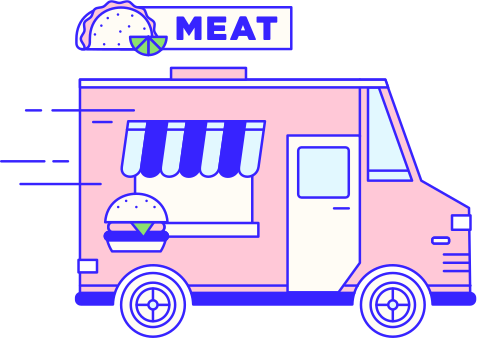

What is the emissions threshold?
Leaders around the world have formed agreements with the goal of limiting global temperature rise by 2° C.
To meet this goal, emissions from human activities must stay below 21 gigatons per year by 2050.
The situation is intensified by a climb in global population – expected to be 10 billion by 2050.
If 10 billion people shared your beef eating habits, we’d create 8 gigatons of greenhouse gas.
Problem One
Your diet leaves x% of the threshold for:
- Electricity and heat generation
- Industry and Manufacturing
- Transportation
- Buildings
- The rest of our agriculture
Problem Two
Current agreements don’t address diet and agriculture as an area to reduce
emissions – a significant omission.
If business continues as usual, emissions from the agriculture sector alone could reach 20.2 gigatons – nearly the total emissions threshold for 2050.
Combined with non-agricultural sectors, global emissions would greatly exceed 21 gigatons with severe consequences for people, public health, and ecosystems.
Today, 14.5% of global emissions come from raising animals for human consumption. Of these emissions, beef production accounts for the largest percentage.
Most of the emissions from cows are produced naturally during digestion in the form of methane gas. This gas is 84 times more potent than CO2.
What’s your individual impact?
Your annual diet of beef produces 0.2 kg CO2e of greenhouse gas.
Thats like driving xkm in an average car.
Beef is one major source of greenhouse gas emissions that everyone can choose to limit. By making a conscious decision to change our diet we can make a difference in fighting climate change.
What should I do?
Meat is important in many people’s diet, and when eaten in moderation it can provide healthy, complete proteins, along with other nutrients such as iron, zinc, vitamins B-12, B-6 and niacin. However, consumers eat far more meat than needed to get their recommended amount of daily protein 2.
We can improve our health and even extend our lives by eating more vegetables and less meat (needs source). More importantly, we can help make the world sustainable.
Eat less beef and dairy. When you do eat beef or dairy, choose grass-fed, organic and pasture-raised.
Choose humane and avoid processed/preserved animal products.
Waste less – buy right-size portions and eat what you buy. On average, uneaten meat accounts for more than 20% of meat’s greenhouse gas emissions 5.
Eat more plants – low-impact protein foods like grains, legumes, nuts, and tofu. See other meat alternatives.
Support policies aimed at making the price of beef reflect its environmental cost link.
So what do you think?
If everyone ate the same amount of beef as you, that would be x% of the global greenhouse gas emissions budget in 2050.
Could you reduce your consumption to help combat climate change?